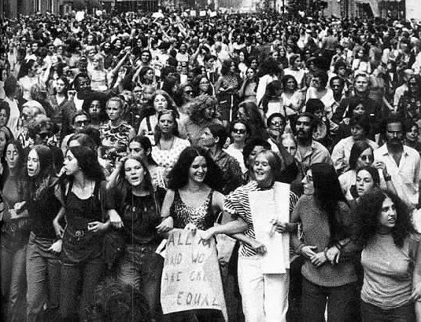

December 1978
WE ARE THE RISING TSUNAMI
WE ARE THE SECOND WAVE!
Women’s Strike for Equality Photo: http://ahistoryofnewyork.com/2008/08/dont-iron-while-the-strike-is-hot/
LADIES, DO YOU FEEL DISCRIMINATED AGAINST BY MEN? THINK THAT SOCIETY HATES WOMEN? WANT TO FIGHT FOR YOUR RIGHTS? JOIN THE SECOND WAVE!
SEE OUR LATEST ARTICLES HERE!
The Pregnancy Discrimination Act Passes